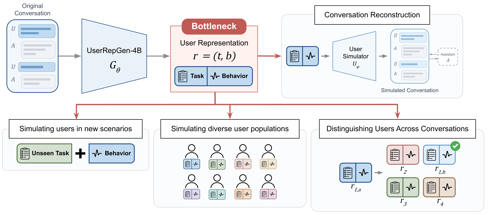

首发日待核实 · 2026-10-15首次观察 · 用户模拟专项支线 · Learn the representation
UserRepGen-4B
真实对话→task与user_behavior→独立模拟器。在线监督更新表示生成器，推理不再需要模拟与反馈回路；它不是用户发言生成器。
4.95 / 6.02fidelity Best-of-1 / Best-of-3，十分制
3,200训练对话；700条不重叠评测
51.02%四选一同用户匹配，暴露可链接风险
OSFT ≠ GRPO
当前策略生成表示→固定环境模拟→judge比较→hindsight改进表示→监督更新。普通SFT4.64/5.68，GRPO3.57/4.59。
预算必须匹配
Best-of-3多三次rollout选择；10轮反馈的6.10不是一次推理成绩。88%真人一致率来自100对分数不同样本与一位expert。
行为摘要不是匿名
表示比完整对话更易匹配同一用户；禁止把推断当稳定人格、真实身份或临床事实，保护授权与敏感信息。
实验设计
交换task与behavior来源，固定simulator/assistant/harness；同时测fidelity、任务终态、多样性、答案泄漏和隐私风险。
